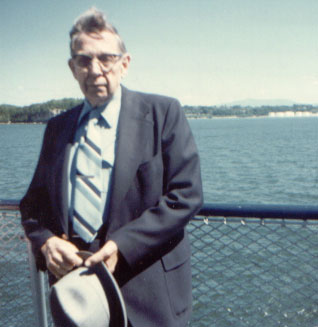

Neal kept rather volumous records of things, and two of the following letters are from a file marked "WALTER WOGSLAND". Unfortunately, by 1980 Walter was unable to correspond, so his wife Priscilla wrote to Neal instead. The letters were transcribed and charts scanned in March 2006 by Bradley Wogsland.
|
724 W. Ring Factory Road Bel Air, MAryland 21014 14 April 1980 |
|
Dear Cousin Walter,
During the past several years, I have been corresponding with various relatives in an effort to assemble a list of the name s of descendents of Ole (Olav) Olson Wogsland (Vaagsland or V�gsland) and his wife Maria Steinersdotter (Stenersdotter) Vraalstad (Wrolsted), who immigrated to the USA (Wisconsin) with their family ... Ole, Steiner (Stener), Aasta (Aaste), Halvor, Anne, and Erik (Eric) ...in 1850. The various spellings of these names are just a few of those that I have encountered. Ole and Maria were my great-great-grandparents. They first settled in a community on the Rock River near Ashippun, Dodge County, Wisconsin, and then moved to the New Hope/Iola area in 1854. My parents, Obert and Alice Wogsland, 1124 Charles St., Fort Atkinson, Wis. 53538, told me the names they could remember in your branch of the family, but I have not written to anyone to expand my list until now. I would appreciate receiving names (and addresses, if conveniently available) of the descendents of Martin Wogsland. Also, do you know of anyone who has gathered genealogical data on our family? I am the oldest of the children of Obert and Alice W., followed by Lyle, Sylvia (Brown), and Wayne. I graduated from Shawano High School (Wis.) in 1945 and the University of Wisconsin in 1949. I am employed by the Dept. of the Army at Aberdeen Proving Ground as a Mechanical Engineer. I married Mary Dell Fortune of Baltimore in 1952 and we have 3 children. Dell Marie graduated from Western Maryland College in 1976 and is an Investigator for the U.S. Office of Personnel Management. James graduated from W.M.C. in 1978 and is an Insurance Adjuster. Nancy will graduate from East Carolina University in May with a Bachelor of Fine Arts degree in Commercial Art. I have a grandson, also ... Bradley W., 1 month-old son of James and Sally W. When attending the wedding of my niece, Lori Brown, to Steve Wiseman in Fort Atkinson, Wisconsin, last October, my uncle Walter W. from Iola told me that you and he have been corresponding. I promptly took pen in hand and it has taken only 6 months to get this far ... about 1 word per day. When I started serious searching for the Wogsland genealogy about 2� years ago, I was under the impression that only Ole, Halvor, and Erik had immigrated and the rest of the family had stayed in Norway. Then I received a clipping from the Iola Herald from Melvin Voxland in Rochester, Minnesota, who stated that our ancestral lines merge back in the 1700's. The clipping mentioned the names of Steiner Woxland and Knut and Aaste Bergenamong the membership of New Hope Church in 1890-1. Melvin told me that they also were brother and sister to our forefather, Ole. Then I went to the National Archives in Washington, D.C., and searched through old census records. The 1860 records showed Ole and Mary Oleson and son Eric living with Ole and Cornelia Volksland in the town of New Hope. Meanwhile, Stein and Adline Olsen (or Oleson) were neighbors of Halvor Oleson in the town of Iola. There was no mention of the Bergens or of Anne W. I eventually found the Bergens (Knut and Caroline) in the 1900 census and then decided to go through the 1880 record for the town of Iola name-by-name. They had used the name GUNDERSON and were neighbors of Steiner and Halvor. I have assembled a chart showing the names I have found so far. A copy is inclosed. I have found no references to the sister named Anne after 1852, when she was confirmed (in Wisconsin) by Rev. N. Brandt. I would appreciate any information that you can give me on these ancestors, and especially on Anne Olesdotter Wogsland....... I also have put together several charts showing the descendants of our immigrant ancestors, one of which I am inclosing. With each generation, the members have increased to the point where it is impossible to get all of the names on a single page. For example, the chart I have inclosed shows only 3 generations of descendants of your great-grandparents, Ole and Maria Olson Wogsland. As you can see, I do not have your mother's maiden name recorded ... or that of your aunt Florence (which I can get from your cousin Raymond when I write to him again). I also need the names of the descendents of Martin Wogsland (plus wives/husbands) so that I update and complete my chart for the descendants of Ole & Gunhild Wogsland (I mentioned this before). After I get the income tax forms completed, I plan to update a chart on the descendants of Lars Nottolfson (and Aslaug Simonsdotter), 1705-1777, of Vaagsland Gaard (Farm), Tordal (Torisdal), Telemark (Bratsberg), Norway. I have recently received several names to be added. My Great-Great-Great-Great-Great Grandfather, Lars, divided Vaagsland between sons Olav Larsson and Nottolf Larson (1722-1807). Melvin Voxland is Olav's Great-Great Grandson. Our line follows:
I'm not sure whether I should call you "cousin" or "uncle" ... or perhaps "second-cousin". Officially, it is "first-cousin, once removed". Anyway, please write .... your 1� Cousin, Neal W.
DESCENDANTS OF OLE OLSON WOGSLAND, SR., AND MARIA STENERSDATTER, IMMIGRANTS TO USA IN 1850 The ages given in the US census enumerations are as of June 1st of te census year.
* 1890-1 North New Hope Church census Children of Gunder K. Bergen also were listed in the 1890-1 NNH Ch census. Halvor Wogsland is believed to have married a widow with a young son (Carl). Another descendant of Ole and Maria was a daughter named Anne, born 28 August 1836. She was confirmed in the USA in 1851. So far, I have not located her in the census records. Three children of Ole and Maria died in their infancy. Census records after 1900 are "closed" because of the US Privacy Laws. The 1900 records have just recently been made available, but only at the National Archives and only to persons conducting genealogical research.
|
|
April 30, 1980 25 Grove St., Burlington, Vt. 05401 |
|
Dear Cousins,
Thank you so much for your nice long letter and materials on the family tree. I am sorry to be so long answering, Walter was having a bad week and since I have no help and he is a complete care I am so exhausted by evening I am not able to do many things that should be attended to, it's out of the question to get anything done during the day. I am writing for Walter because the day before Thanksgiving he suffered a stroke and several others followed, he was in a hospital twice and his condition got worse every time he had another stroke, he couldn't speak or swallow anything but liquids for a time. He had all kinds of tests, a catscan, brain scan, every kind of test the doctor could think to try and determine what was causing the strokes. They found that his viens through his whole body were filled with calcium, the viens on each side of his neck were so clogged, the circulation to his head was almost completely cut off, consequently he also suffered from loss of memory. The doctor said he might as well be home as there was nothing they could do. Walter retired on disability in 1945, he was medical administrator at Crile General Hospital in Cleveland at the timehe was taken ill, ateriosclerosis and since his illness was progressive it was best for him to retire. God is good to us, He has let us be together all these years even though Walter was never well, still there were times when he seemed much better than he really was. For the past year and a half I could see him failing, he doctored regularly but there is only just so much the doctors can do. So I wait and pray. Walter and I were married in 1933. We have no family and I laid to rest all my family, my father died in November 1977 at the age of 109 and 5 months, Walter and I took care of him, we had been together 28 years.
Now in answer to your letter, yes, there is another member of the family who is gathering information for the family tree, she is Silver Lake College, 2406 Alverno Road, Manitowoc, Wis. 54220 Sister Mary teaches at the college, she is such a lovely person, I hope some day you will meet her. She is the daughter of the late Oscar Wogsland (Walter's oldest brother.) Their father was Ole Martin Wogsland, he died many years ago while Walter was in the service stationed in Honolulu after the first world war. I never lived in Wisconsin so I regret there is so little I can tell you, but I think Sister Mary may have more information. I think next week I will have some to stay with Walter a few hours, I never leave him alone, I have a few clippings I will get zerox copies and send them to you, Grandma's obituary gives the names of all their family, Grandma comes from Norway but I'm not sure of Grandpa Wogsland, we had a family re-union in Wis. while Walter was still in the service but their father was not mentioned since he had died some years before. Walter worked on a farm to finish his schooling after which went into the army, soon afterwards transferring to the medical department, he never went home to live again so he really wasn't well accquainted with his family, its only in late years that we are corresponding and we too, learned of Iola Walter from a newspaper clipping sent by one of Walter's sisters who lives in Milwaukee. I believe he is the son of Carl, brother of Ole Martin Wogsland. Since this was about two years ago, Walter told me at the time that he didn't even know his father had a brother. He telephoned Iola Walter and had a "get accquainted visit" on the phone, we have written to each other ever since, they really are wonderful people, I'm so glad we found them, and now we have found you too. I wish I could read your letter to Walter, he would be so pleased, but his mind is so confused, he is unable to read or write, it's very sad to see him so ill, he had such a brilliant mind. Walter is 78, I am 77. Now I would like to ask your permission to send Sister Mary your letter and materials on the family tree, she would be so pleased and I'm sure she will share with you all she has learned of the families. Thank you for telling us about your family, they are all very precious, and grand people, Sister Mary would so enjoy hearing about them, I'm sure life has been lonely for her at times, she lost her mother when she was only eleven. |
|
It is past mid-night, I shall have a cup of tea and retire, perhaps I can get this out for tomorrows post.
Wednesday Morning: I am enclosing a picture of Walter taken on the ferry boat in August 1978, he was already showing stronger signs of his illness. This trip was just a little outing for the afternoon, the ferry goes from Burlington to Port Kent, N.Y. the round trip takes three hours, we don't have a car but we have good taxi service. The scenery is just beautiful, especially further on along the shore line of New York state. Please excuse my poor writing and poorer spelling. Sister Mary is used to me. Thank you again for writing and we send our very best wishes to you and your family. I shall wait for your permission to forward your letter and materials to Sister Mary, there is such a world of information I would not like any of it to get lost.
Sincerely, |  |
The caption on the back of the photo reads "August 1978 Walter Wogsland, son of Ole Martin Wogsland and Oletta Solum Wogsland, born in Hazelhurst, Wisconsin Sept. 30, 1901."
|
6 and 7 May 1980 724 W. Ring Factory Road Bel Air, MAryland 21014 |
|
Dear Cousins Walter and Priscilla,
Thank you for taking the time to answer my (our) letter and telling us about yourselves. It is unfortunate that we didn't get acquainted years ago, but that is the way of life, I guess. As I mentioned in the previous letter, the only Wogslands that I knew about were the descendants of Ole and of Eric ... and most of them by name only. I did know that there was another brother named Halvor, also. Furthermore, I knew very little about the brothers and sisters of my grandfather, Carl Oscar Wogsland, who was the youngest son of Ole and Gunhild. My parents, however, visited with several of Walter's sisters and brothers during the 1950's and 1960's. The only contact, until recent letters, with the North Dakota Wogslands (Andrew) was about 1960 when my uncle Walter and Vivian visited Aunt Florence and Cousin Clifford during a vaction trip. I am very sorry to hear of Walter's strokes. They cause so much difficulty and many handicaps. My father (Obert), who also is 78, has to use a walker or wheel chair to get around now and his memory and mind often wanders, but he has some good days too. My mother (Alice), who is 77, doesn't leave him alone for more than an hour or two, and that is rarely. It is amazing that you and mother are able to handle the heavy workload that results. Yes, please send copies of my letter and inclosures to Sister Mary Wogsland. In fact, I am inclosing coopies so that you can keep the originals. I could write to her directly, but would prefer your offer of introduction. Please suggest that she write to me. Also, I would appreciate copies of any clippings relating to the family. I can copy original clippings and return them; the risk is that a valuable clipping could get lost in the mail. Well, I had better stop for now. It's 12:30 and my lunch break is over. (If you see any greasy fingerprints on the letter, its because I am eating and writing concurrently.) Thanks again for your letter ... Mary Dell enjoyed it too.
|
|
Sincerely, Neal Wogsland (and Mary Dell!) |
Sister Mary did eventually write Neal, and you can read their correspondence here.
|
July 9, 1980 25 Grove St., Burlington, Vt. 05401 |
|
Dear Cousins,
I have decided not to wait any longer, I wrote Sister Mary asking her to write to the town clerk in Merrill or other places near by to see if there was a record of her grand parents marriage, as you see, the dates cannot possibly be right, Walter was born in 1901 and there were others older than he, as far as I know, there was Oscar, Arvin, Gina, Mable, a son Herbert died young about ten years old, then others followed Walter, Emma, Inez and Margaret. There were nine Wogsland children in the family of Ole Martin and Oletta Solum Wogsland. Perhaps Sister Mary has not been able to get the dates from the town clerk in Merrill, and perhaps that isn't the place where they were married. I hope in time to hear something about it, in the meantime I wait too. I owe Vivian and her family a letter for a long time, I'll get to it. some times after waiting too long, I just call on the phone and that makes up for no letter. I find it very hard to write a letter, like your mother, I'm so exhausted most of the time, I wonder if anyone can read what I write. I'm sorry I waited so long to send these enclosers but I epected to hear from sister Mary any time. I think the Prarie Rapids clipping is very interesting, I don't remember who sent it to Walter but I'm glad for you to have the original, I sent a zerox copy to the Sister and also one to Shirley Kitzke in Moline, Ill. (2921 - 18th Ave.) 61265 Shirley just lost her husband about six weeks ago, he was 59 years old. She is the daughter of Arvin Wogsland, second son of Ole and Oletta. He lives in Tomahawk. Shirley's Son is interested in the family tree. Walter is slowly improving, he takes short walks in the yard with the walking aid, he gets along fine inside without it, his memory is improving also but from Tanksgiving to the first of May, everything remains a blank, I'm so thankful he has come this far, the doctor did not expect this much improvement. So we wait and pray. I can understand very well how difficult it must be for your mother too. Please remember me to her, Walter says "Hello" too. We hope you will all have a nice enjoyable summer and good weather. So far we had very little summer but we hope it will improve in the next few months. We hope to hear from you from time to time, we know how busy you are too, just write a few lines when you can, if I get more information I'll send it on to you. Our very best wishes to everyone. Walter and Priscilla Wogsland |
|
Oct. 8, 1980 25 Grove St., Burlington, Vt. |
|
Dear Cousins,
We were saddened with the news of your father's passing, but you may be sure God has given him a good place in His heaven. I, too! am very pokey at writing, the daily routine is always the same and if I add on a few more little chores I am so exhausted, I can understand how hard it must be on your mother. Before Walter came home from the hospital the second time last winter, I had already turned the sun room into a bed room, he couldn't walk without help so it was out of the question to think of him climbing stairs, also te doctor wanted me out of the stairs, I had no choice, however, it was nothing new, we had done that for my father so that one of us could be with him at all times. Walter has breakfast at the table but gets a tray for dinner and supper, I bring one in for myself too, we live like millionaires but actually it's only the aires. This room is on the south side of the house, thereis very little wall space so when there is sun we get it on one side - the end of the room - also on the west, so there is sun coming in all day. It's a very pleasant room, and I've been very thankful for it many time, the windows are on the east, south and west. Walter is doing quite well, he is able to take short walks in the yard, and a little rest on the back porch in between walks. I took some pictures on his birthday, September 30th, I don't have them yet but will send you one next time. He is 79. I regret to tell you I'm unable to supply you with middle names, I asked Walter but he said he doesn't remember ever hearing a middle name mentioned in his family, and since I only met them briefly I never heard Elsie's maiden name (Arvin's wife) and Oscar's wife Kate, Sister Mary's mother, had died long before we had the brief family re-union during the war. As for me, I am Priscilla Aikey-Wogsland, guess who ever took me to be baptized thought one long name was enough, so Aikey is my maiden name, it's English but grandma Aikey was a La Maire, she came from a small place called St. Mary, no doubt in quebec but I have not been able to find anyone who knows where it is, some day I'll get a map on quebec and perhaps I'll find it. She was born in 1826 and died in 1923, however, this is not the Wogsland family. Have you written to Shirley Kitzke? I think she will be going home soon, she has been in Tenn., her son Keith and Gloria have a new baby and Shirley went to help Gloria, she could tell you her mother's maiden name and also middle name. I am waiting to hear that she had arrived home. I'd like to get this into the hands of the post man, he is due any minute, I'm sorry to be a long time writing, but I'm sure you understand. Our best wishes to all and wish you a nice long autumn before the snow begins to fly, the nights are already getting cold. We enjoy hearing from you, do write soon as you can. Tell your mother I think of her often. Sincerely, Walter and Priscilla |
References in this letter and the last, e.g. finding middle names, lead one to think that Neal may have sent some letters to Priscilla without putting copies in the file.
| 21 December 1981 |
|
Dear Cousins Walter and Priscilla,
Greetings and best wishes for the coming year. It has been a long time since I have written so I'm shipping this note in with the Christmas Card. I hope this note finds you in good health. We are doing quite well. Our youngest daughter, Nancy, is recovering from a skiing accident ... no broken bones but a monstrous black eye. We have some good news ... we have a second grandson, Patrick Andrew Wogsland, who was born to Sally and Jim last February. We also have some sad news ... my mother died in September (Alice M. Anderson Wogsland); Dad passed away in June 1980. Just a short note for now. I haven't done much genealogical investigation during the past year. What little I have done has been divided between my wife's family and the Wogslands and Andersons. The unique stationary (-over-) is a preliminary genealogical chart that I prepared a year ago but never circulated. This chart lists most of the descendants of Ole and Gunhild Wogsland, your grandparents. My grandson Patrick is not on it and I'm sure there are others that should be added. It still needs a lot of middle names and names of spouses; probably contains numerous spelling errors, too. This chart is just for one of the 5 or 6 families descending from Ole (Olav) Olson Wogsland (1800-1866) and Maria Stenersdotter Vraalstad (1799-1864), who came to the United States in 1830. I plan to assemble preliminary on the three others for whom I have information and then send them to members of these branches for corrections and additions. This chart needs some corrections and additions too. If you see any errors, send me the corrections also. I have received infromation on the Martin Wogsland lineage from Sister Mary Wogsland and from Inez Styza as well as from you. I just re-read your last two letters and found your comment on middle names. O.K. Thanks! I want to apologize for being slow to write. I have neglected my correspondence for a whole year ... that is terrible. I will try to do better in the future. I am inclosing a snapshot of Mary Dell and myself so that we can get a little better acquainted. Please write when you can. May the Lord be with you during the season of celebrating His birth! Your cousin, Neal Wogsland (and Mary Dell, too) |
Below is Neal's "unique stationary". He never did assemble similar charts for the other families though.